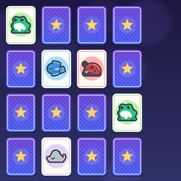
Memory cards
Игра «мемори»: переворачивай по 2 карты и найди 8 пар маленьких существ за как можно меньшее число ходов. В каждой партии карты меняются местами.
⬇️ Скачать проект (286 КБ)Français · English · Español · Deutsch · Italiano · Português · Русский · 中文 · 日本語
Готовые игры, сделанные в Yop2D — бесплатном 2D-движке без кода для Android. Откройте их в Yop2D (вкладка «Примеры» на стартовом экране), поиграйте, затем посмотрите их узлы и измените их, чтобы научиться.

Игра «мемори»: переворачивай по 2 карты и найди 8 пар маленьких существ за как можно меньшее число ходов. В каждой партии карты меняются местами.
⬇️ Скачать проект (286 КБ)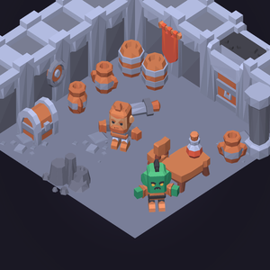
Эскейп-игра в изометрической темнице: обыщи комнату, разбей горшки, разгадай код сундука и найди 3 золотые монеты, чтобы купить ключ у орка. С инвентарём, таймером и текстами на 9 языках.
⬇️ Скачать проект (423 КБ)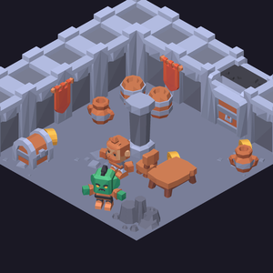
Гуляй с джойстиком по изометрической темнице: герой проходит за колонной или перед столом, натыкается на мебель и меняет картинку по направлению. Найди 5 спрятанных золотых монет, чтобы открыть решётку. Показывает порядок отрисовки по положению и ходьбу в изо-виде.
⬇️ Скачать проект (535 КБ)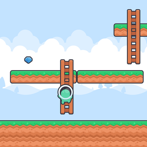
Персонаж сам меняет анимацию: ходит, приседает, прыгает и лезет по лестницам (со спины). Никаких узлов для движения: всё настраивается в «Поведение объекта» (Персонаж платформера, Лестница). Табличка показывает текущую анимацию. Собери 5 камней.
⬇️ Скачать проект (156 КБ)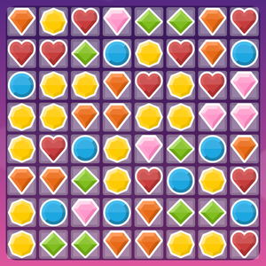
Игра «три в ряд» в стиле Candy Crush: меняй местами соседние конфеты, собирай по 3 и больше, устраивай комбо и набери 1500 очков за 25 ходов. Вся игра умещается в несколько узлов сетки.
⬇️ Скачать проект (238 КБ)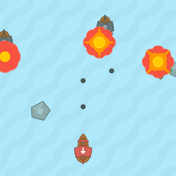
Морской бой со взрывами повсюду: управляй кораблём джойстиком и стреляй очередями по пиратам, которые мчатся на тебя и палят в ответ. 3 жизни, очки, и враги всё быстрее.
⬇️ Скачать проект (121 КБ)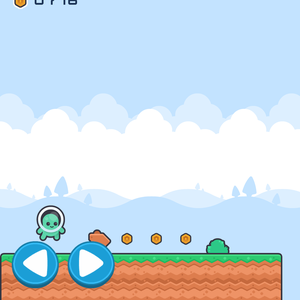
Платформер на 3 экрана: монеты, враги, которых можно раздавить прыжком, шипы, 3 жизни и финишный флаг.
⬇️ Скачать проект (144 КБ)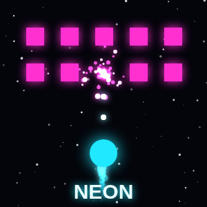
Аркадный космический шутер в неоновом стиле: сбивайте волны врагов и набирайте очки.
⬇️ Скачать проект (254 КБ)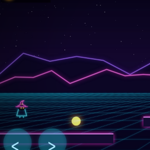
Неоновый платформер: камера следует за игроком, ловушки и портал выхода.
⬇️ Скачать проект (1.4 МБ)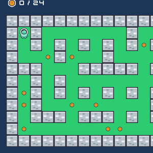
Лабиринт из тайлов: соберите все монеты, пока две мухи преследуют вас, сами находя дорогу.
⬇️ Скачать проект (121 КБ)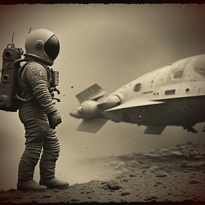
Тревожная история с выбором: астронавт потерялся на Луне. Диалоги на 9 языках.
⬇️ Скачать проект (262 КБ)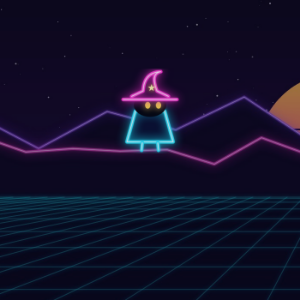
Витрина всех визуальных эффектов: взрывы, огонь, дождь, снег, удар током, вспышка, затемнение… одним касанием.
⬇️ Скачать проект (1.0 МБ)В Yop2D эти примеры скачиваются сами на вкладке «Примеры». Можно также импортировать zip-файл через «Открыть скачанный проект».